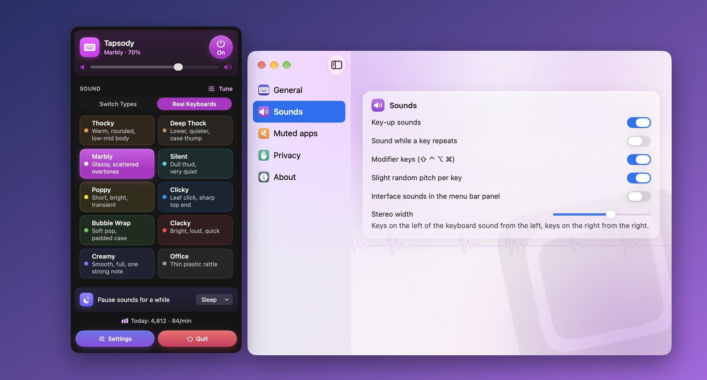

Tapsody
Mechanikus billentyűzethangok a Macedre, a menüsorból.
Közvetlenül Web Audio segítségével szintetizálva. A Mac alkalmazásban minden billentyűleütés azonnal megszólal a menüsorból.

Mit csinál
Minden leütés egy kattanást szólaltat meg, amelyet egy maroknyi számból helyben szintetizál. Az appban nincsenek hangfelvételek, ezért kicsi marad, azonnal elindul, és sosem szól úgy, mint egy ismétlődő hurok.
- Tizenhét hang két gyűjteményben: hét általános switch-típus és tíz teljes billentyűzet utánzata, valódi építések méréseiből hangolva.
- Úgy viselkedik, mint egy igazi billentyűzet. A szóköz mélyen és hosszan cseng, az Enter és a Backspace mélyebben szól a betűknél, a billentyűzet bal oldalán lévő billentyűk pedig balról hallatszanak.
- Hangold be. Húzd a hangszínpanelen a fényességhez és a testességhez, vagy használd a hangmagasság és a lecsengés csúszkáit.
- Nem áll az utadba. Altasd el egy időre, némíts el kiválasztott appokat, és nézd meg, hány billentyűt nyomtál le ma.
macOS 14 Sonoma vagy újabb szükséges. 34 nyelven érhető el.
Hangfelvételeket lejátszó appok és a Tapsody
Miért kelt a matematikai fizikai szintézis valódi mechanikus billentyűzet érzetet.
| Szempont | Hangfelvételek | Tapsody |
|---|---|---|
| Késleltetés | Észrevehető késés a hangfájlok betöltése miatt | Azonnali, 0 ms-os válaszidő a leütés pillanatában |
| Tárhely | Több száz megabájtnyi nehéz WAV hangfájl | Nincsenek hangfájlok: pehelykönnyű matematikai kód |
| Akusztika | Ismétlődő hangminták, amelyek mesterségesen hatnak | Sztereó térhatás és a szóközbillentyű telt hangzása |
| Némítás | Zavaróan hangos marad megbeszélések és hívások közben | Automatikusan elnémul a kijelölt alkalmazásokban |
| Adatvédelem | Harmadik féltől származó eszközök hálózati kapcsolattal | Nincs hálózati hozzáférés és a macOS elrejti a jelszómezőket |
Adatvédelem egy bekezdésben
A Tapsodynak szüksége van a Bevitelfigyelés engedélyre, hogy tudja, mikor nyomnak le és engednek fel egy billentyűt. A billentyű kódját olvassa ki, semmi mást. Semmilyen szöveget nem tárol, semmit nem küld sehová, nincs fiók és nincs hálózati hozzáférés, a jelszómezőkbe gépelt szöveget pedig maga a macOS tartja vissza. A teljes adatvédelmi irányelvek ugyanezt mondják el részletesebben.
További appok ugyanattól a fejlesztőtől
Kis appok, mindegyik arra készült, hogy egy dolgot jól csináljon. Nincs fiók, nincs reklám, és egyik sem követ nyomon.
 StatuetteCPU, memória, lemez és hálózat a menüsorban.Mac
StatuetteCPU, memória, lemez és hálózat a menüsorban.Mac TocketteIdőzítő, egy húzásnyira a menüsortól.Mac
TocketteIdőzítő, egy húzásnyira a menüsortól.Mac ZonetteMinden fontos időzóna egy kattintásnyira.MaciPhone és iPadAndroid
ZonetteMinden fontos időzóna egy kattintásnyira.MaciPhone és iPadAndroid LunetteA Hold és a Nap egy pillantásra.MaciPhone és iPadAndroid
LunetteA Hold és a Nap egy pillantásra.MaciPhone és iPadAndroid LunaretteA holdnaptár négy hagyomány szerint.MaciPhone és iPadAndroid
LunaretteA holdnaptár négy hagyomány szerint.MaciPhone és iPadAndroid PausetteKíméletes szünetek a szemednek és a hátadnak.Mac
PausetteKíméletes szünetek a szemednek és a hátadnak.Mac PoisetteÜlj egyenesen – a füledben lévő AirPods emlékeztet.MaciPhone és iPad
PoisetteÜlj egyenesen – a füledben lévő AirPods emlékeztet.MaciPhone és iPad HushetteNyugodt háttérhangok, amelyek sosem ismétlődnek.MaciPhone és iPadAndroid
HushetteNyugodt háttérhangok, amelyek sosem ismétlődnek.MaciPhone és iPadAndroid ThrumlineA pulzusod élőben a menüsorban.Mac
ThrumlineA pulzusod élőben a menüsorban.Mac NightjarÉbren tartja a Macet. Becsszóra.Mac
NightjarÉbren tartja a Macet. Becsszóra.Mac UmbretteMinden elsötétül, csak az ablak nem, amelyben dolgozol.Mac
UmbretteMinden elsötétül, csak az ablak nem, amelyben dolgozol.Mac PrompetteTeleprompter közvetlenül a kamera alatt.MaciPhone és iPadAndroid
PrompetteTeleprompter közvetlenül a kamera alatt.MaciPhone és iPadAndroid TallettePapírszalag az összeadásaidhoz.MaciPhone és iPadAndroid
TallettePapírszalag az összeadásaidhoz.MaciPhone és iPadAndroid ProbetteEgy médiafájl minden műszaki adata, érthetően.MaciPhone és iPadAndroid
ProbetteEgy médiafájl minden műszaki adata, érthetően.MaciPhone és iPadAndroid BindetteHangfájlokból egyetlen rendes hangoskönyv.MaciPhone és iPadAndroid
BindetteHangfájlokból egyetlen rendes hangoskönyv.MaciPhone és iPadAndroid- LettretteNyisd meg a winmail.dat és .msg fájlokat úgy, ahogy elküldték őket.MaciPhone és iPadAndroid
 Nhanh TayÁllíts sorba négy választ. Gyorsan.MaciPhone és iPadAndroid
Nhanh TayÁllíts sorba négy választ. Gyorsan.MaciPhone és iPadAndroid PinetteJegyzetek, amelyek szem előtt maradnak.MaciPhone és iPadAndroid
PinetteJegyzetek, amelyek szem előtt maradnak.MaciPhone és iPadAndroid UsagetteA Claude használati korlátai a menüsorban.Mac
UsagetteA Claude használati korlátai a menüsorban.Mac SquiggoRajzolj egy barátságos társsal.MaciPhone és iPadAndroid
SquiggoRajzolj egy barátságos társsal.MaciPhone és iPadAndroid ForemanMunkák, árajánlatok és számlák szakembereknek.MaciPhone és iPadAndroid
ForemanMunkák, árajánlatok és számlák szakembereknek.MaciPhone és iPadAndroid TilewakeTologatós kirakó, amelynek képei életre kelnek.MaciPhone és iPadAndroid
TilewakeTologatós kirakó, amelynek képei életre kelnek.MaciPhone és iPadAndroid Chăm luyệnGyakorlás vietnámi alsósoknak, felolvasva.MaciPhone és iPadAndroid
Chăm luyệnGyakorlás vietnámi alsósoknak, felolvasva.MaciPhone és iPadAndroid- SalahImaidők az egész családnak.MaciPhone és iPadAndroid